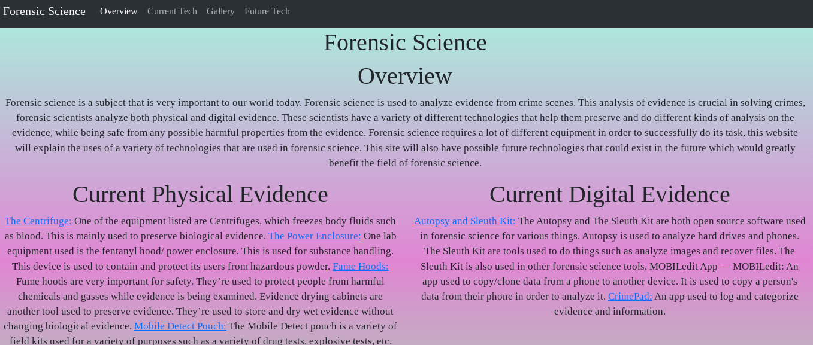

In my junior year I had a year long project called The Freedom Project. The Freedom Project is a year long project where we can create anything we want using what we learned in class. For this project we had the freedom to make anything using javascript and a separate tool that involves using javascript to create this project.
For this project I had decided to make a puzzle game. I made this game using javascript and a tool that I learned called Phaser
. Phaser is a javascript library that is often used to make games. Throughout the school year while learning javascript in the class I also learned how to use Phaser on my own. The puzzle game that I had ended up creating was a game where you had a grid with tiles, the tiles lit up when you pressed them, the end goal of the game was to either get all of the lit up or getting none of the tiles lit up having a blank board.
I really liked the freedom I had been given with this project, last year in my sophomore year I also did a freedom project but that was much more limited than this due to us making a website rather than anything using javascript. Some takeaways that I have for this project is just not to overcomplicate things and create what you can. For this game I had a lot of things that I wanted to make but I didn't end up creating everything that I had originally planned, if I had kept on focusing on making one single aspect of the game I wouldn't have finished it in time for the deadline. So what I was able to do was create a basic game without all of the various different things that I had thought of when I first was brainstorming ideas for this project, then once I did that I could in the future add anything I would like to add. Another thing I would do in the future was following a stricter schedule, while I did make a plan which did help me I didn't following the schedule very strictly causing me trouble with completing my game on time. Something I would do next would be adding some more essential features to the game such as creating a win screen which my current game does not have.
My Project